Capítulo 3 Análisis exploratorio de datos (EDA)
Figura 3.1: Análisis exploratorio de datos (EDA)
El Análisis Exploratorio de Datos (Exploratory Data Analysis, EDA por sus siglas en inglés) es una etapa fundamental del proceso estadístico que consiste en utilizar gráficos, visualizaciones y resúmenes numéricos para examinar un conjunto de datos.
Su propósito principal es explorar, descubrir patrones, identificar anomalías y formular posibles hipótesis, sin realizar inferencias estadísticas formales. El EDA busca comprender la estructura de los datos y generar ideas, más que confirmar hipótesis previamente establecidas.
3.1 ¿Cuándo debo utilizarlo?
El Análisis Exploratorio de Datos (EDA) es una herramienta poderosa para examinar, comprender y preparar un conjunto de datos. Aunque el análisis esté orientado a hipótesis específicas, el EDA es útil en etapas previas como la limpieza de datos, la detección de errores, el análisis de subgrupos o simplemente para obtener una mejor comprensión de la estructura y comportamiento de los datos.
Uno de los pasos iniciales más importantes del EDA es la representación gráfica de los datos, que permite identificar patrones, tendencias y valores atípicos con mayor claridad.
3.1.1 Tipos de análisis exploratorio:
- No gráfico: Utiliza estadísticas descriptivas para resumir las variables numéricamente.
- Gráfico: Representa visualmente los datos mediante histogramas, diagramas de caja, gráficos de dispersión, entre otros.
- Univariado: Analiza una sola variable a la vez, observando su distribución, tendencia central y dispersión.
- Multivariado: Examina dos o más variables simultáneamente, identificando relaciones o asociaciones entre ellas.
Cada una de estas divisiones puede, a su vez, clasificarse según el tipo de variable involucrada: categórica o numérica.
3.2 Representación de datos según su naturaleza
La forma en que se representan los datos depende fundamentalmente de su naturaleza, es decir, del tipo de variable que se está analizando. Esta clasificación influye directamente en la selección de métodos gráficos y estadísticos adecuados para el análisis.
| Naturaleza.de.la.variable | Escala.de.Medidas | Frecuencias | Medidas.de.Localización | Medidas.de.Dispersión | Medidas.de.Distribución | Gráficos |
|---|---|---|---|---|---|---|
| Cualitativa | Nominal | Sí | Moda | No | No | Sectores, Barras |
| Ordinal | Sí | Moda | No | No | Sectores, Barras (sin orden) | |
| Cuantitativa | Intervalo | Agrupadas | Media, Mediana y Moda | Sí | Sí | Histograma, Tallo y hojas, Cajas y Bigotes, Dispersión |
| Razón | Sí | Sí |
3.3 Presentación y análisis de la información en estudios descriptivos
En los estudios descriptivos, la presentación y análisis de la información constituyen fases clave para comprender las características fundamentales de los datos recolectados. El objetivo principal es resumir y organizar la información de forma clara y accesible, sin realizar inferencias ni establecer relaciones causales.
| Tipo de Tabla | Tipo de Gráfico |
|---|---|
| De Frecuencia (Variable Cualitativa) |
|
| De Frecuencia (Variable Cuantitativa) |
|
| De Asociacion (Dos Variables Cualitativas) |
|
| De Asociacion (Una Variable Cualitativa y una Cuantitativa Discreta) |
|
| De Asociacion (Una Variable Cualitativa y una Cuantitativa Continua) |
|
| De Asociacion (Dos Variables Cuantitativas) |
|
3.4 Análisis explotario con variable respuesta numérica
Para el desarrollo de las visualizaciones trabajaremos con el conjunto de datos California Housing, un conjunto de datos ampliamente utilizado en ciencia de datos y aprendizaje automático para problemas de regresión. Este conjunto contiene información sobre características demográficas, geográficas y socioeconómicas de distintos sectores censales del estado de California, con el objetivo de analizar y predecir el valor medio de las viviendas a partir de variables como la ubicación, el ingreso medio de los hogares, el número de habitaciones y la densidad poblacional.
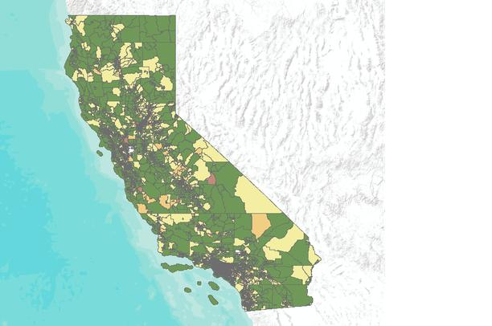
Figura 3.2: Viviendas de California
El conjunto de datos completo puede encontrarse en el repositorio oficial de Scikit-learn y en diversas plataformas de ciencia de datos como Kaggle. En este material trabajaremos con una versión del California Housing Dataset, que contiene información de diferentes sectores censales del estado de California. El objetivo principal es predecir el valor medio de las viviendas (median_house_value) a partir de variables geográficas, demográficas y socioeconómicas. Entre las variables incluidas se encuentran la longitud y latitud del sector censal, la antigüedad media de las viviendas, el número total de habitaciones y dormitorios, la población, el número de hogares, el ingreso medio de los hogares (median_income) y la proximidad al océano (ocean_proximity), permitiendo realizar análisis exploratorios y desarrollar modelos de aprendizaje automático para problemas de regresión.
3.4.1 Contexto de los datos de housing
Aquí tienes una explicación de las variables en el conjunto de datos de housing proporcionado:
Las variables del conjunto de datos son
- longitude: Coordenada de longitud de la ubicación de la vivienda.
- latitude: Coordenada de latitud de la ubicación de la vivienda.
- housing_median_age: Edad media de las casas en la zona.
- total_rooms: Número total de habitaciones en las casas de la zona.
- total_bedrooms: Número total de dormitorios en las casas de la zona.
- population: Población total de la zona.
- households: Número total de hogares en la zona.
- median_income: Ingreso medio de los hogares en la zona (en decenas de miles de dólares).
- median_house_value: Valor medio de las casas en la zona (en dólares).
- ocean_proximity: Proximidad del área al océano.
El objetivo a resolver es predecir el valor medio de las viviendas (median_house_value). Sin embargo, antes de construir modelos de regresión multiple, iniciaremos con un análisis exploratorio de datos (EDA) del conjunto California Housing, con el propósito de comprender la estructura de los datos, identificar patrones, detectar valores atípicos y analizar las relaciones entre las variables que pueden influir en el precio de las viviendas.
3.4.2 Extracción, transformación y carga (ETL)
- Carguemos el conjunto de datos:
Code
- Verifiquemos que leímos bien los datos viendo el encabezado y la cola de los datos:
## longitude latitude housing_median_age total_rooms total_bedrooms population
## 1 -122.23 37.88 41 880 129 322
## 2 -122.22 37.86 21 7099 1106 2401
## 3 -122.24 37.85 52 1467 190 496
## 4 -122.25 37.85 52 1274 235 558
## 5 -122.25 37.85 52 1627 280 565
## households median_income median_house_value ocean_proximity
## 1 126 8.3252 452600 NEAR BAY
## 2 1138 8.3014 358500 NEAR BAY
## 3 177 7.2574 352100 NEAR BAY
## 4 219 5.6431 341300 NEAR BAY
## 5 259 3.8462 342200 NEAR BAYLas dimensiones, los nombres de las columnas y la estructura de la base de datos se obtienen con los códigos:
## [1] 20640 10## [1] "longitude" "latitude" "housing_median_age"
## [4] "total_rooms" "total_bedrooms" "population"
## [7] "households" "median_income" "median_house_value"
## [10] "ocean_proximity"## 'data.frame': 20640 obs. of 10 variables:
## $ longitude : num -122 -122 -122 -122 -122 ...
## $ latitude : num 37.9 37.9 37.9 37.9 37.9 ...
## $ housing_median_age: num 41 21 52 52 52 52 52 52 42 52 ...
## $ total_rooms : num 880 7099 1467 1274 1627 ...
## $ total_bedrooms : num 129 1106 190 235 280 ...
## $ population : num 322 2401 496 558 565 ...
## $ households : num 126 1138 177 219 259 ...
## $ median_income : num 8.33 8.3 7.26 5.64 3.85 ...
## $ median_house_value: num 452600 358500 352100 341300 342200 ...
## $ ocean_proximity : chr "NEAR BAY" "NEAR BAY" "NEAR BAY" "NEAR BAY" ...- Identifiquemos los valores
NApor columna:
Code
## NA_longitude NA_latitude NA_housing_median_age NA_total_rooms
## 1 0 0 0 0
## NA_total_bedrooms NA_population NA_households NA_median_income
## 1 207 0 0 0
## NA_median_house_value NA_ocean_proximity
## 1 0 0- Otra forma de hacerlo es:
## Cargando paquete requerido: Rcpp## ##
## ## Amelia II: Multiple Imputation
## ## (Version 1.8.3, built: 2024-11-07)
## ## Copyright (C) 2005-2026 James Honaker, Gary King and Matthew Blackwell
## ## Refer to http://gking.harvard.edu/amelia/ for more information
## ##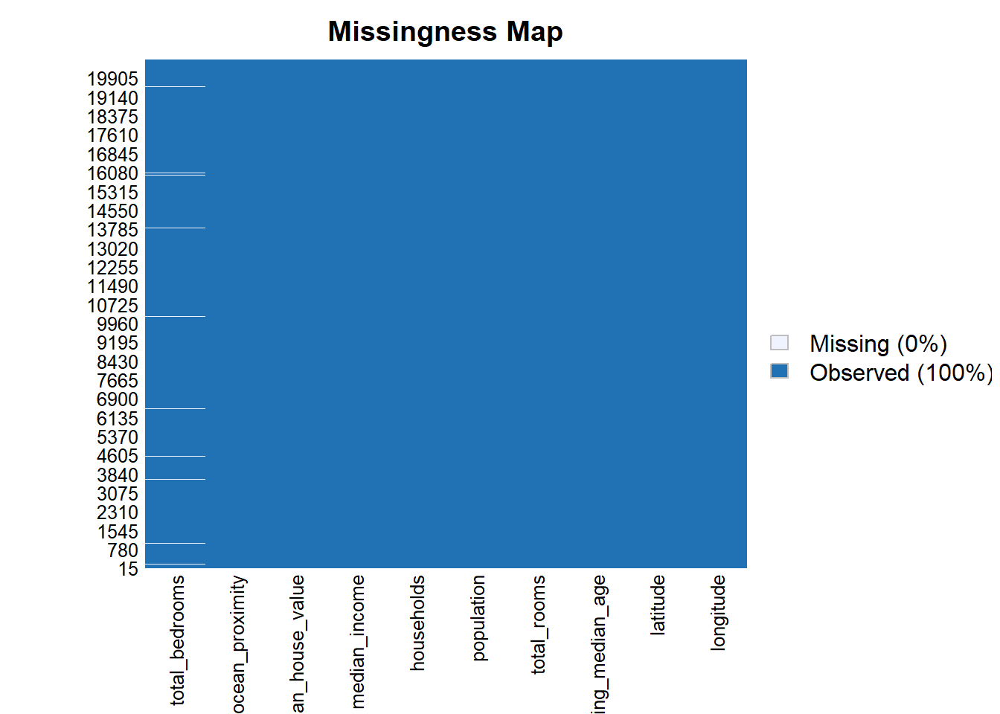
Como tenemos valores ausentes lo vamos a llenar con el promedio
Code
Verifiquemos si fueron llenado son el promedio
## NA_longitude NA_latitude NA_housing_median_age NA_total_rooms
## 1 0 0 0 0
## NA_total_bedrooms NA_population NA_households NA_median_income
## 1 0 0 0 0
## NA_median_house_value NA_ocean_proximity
## 1 0 03.4.3 Análisis de la variable median_house_value (Target)
- Consideremos el resumen estadístico de la variable objetivo
median_house_value, la cual representa el valor medio de las viviendas en cada zona censal:
Code
df %>%
dplyr::summarise(
n = length(median_house_value),
media = mean(median_house_value),
ds = sd(median_house_value),
mediana = median(median_house_value),
minimo = min(median_house_value),
maximo = max(median_house_value),
Q1 = quantile(median_house_value, 0.25),
Q3 = quantile(median_house_value, 0.75),
IQR = IQR(median_house_value)
)## n media ds mediana minimo maximo Q1 Q3 IQR
## 1 20640 206855.8 115395.6 179700 14999 500001 119600 264725 145125La variable median_house_value fue analizada a partir de 20.640 observaciones correspondientes a diferentes sectores censales del estado de California. Se obtuvo un valor promedio de las viviendas de aproximadamente \(\$206.855,80\) USD (DS = \(\$115.395,60\) USD), donde el \(50\%\) de los valores registrados se encuentran por debajo de \(\$179.700\) USD.
El valor mínimo registrado fue de \(\$14.999\) USD, mientras que el máximo alcanzó los \(\$500.001\) USD, evidenciando una alta variabilidad en los precios de las viviendas entre las diferentes zonas analizadas. El rango intercuartílico indica que el \(50\%\) central de los valores se encuentra entre \(\$119.600\) USD y \(\$264.725\) USD, con una amplitud de \(\$145.125\) USD.
La diferencia entre la media y la mediana sugiere una posible asimetría positiva en la distribución, asociada a la presencia de zonas con valores de vivienda considerablemente elevados. Además, el valor máximo observado coincide con un límite superior del conjunto de datos, por lo que será necesario evaluar posteriormente su posible influencia durante el análisis exploratorio y la construcción de los modelos predictivos.
- Veamos un histograma
Code
df %>%
ggplot(aes(x = median_house_value)) +
geom_histogram(aes(y = after_stat(density)),
binwidth = 25000,
fill = "#2c7fb8",
color = "white",
alpha = 0.6) +
geom_density(color = "darkblue", linewidth = 1.2) +
labs(
title = "Distribución del valor medio de las viviendas",
x = "Valor medio de la vivienda (USD)",
y = "Densidad"
) +
theme_bw()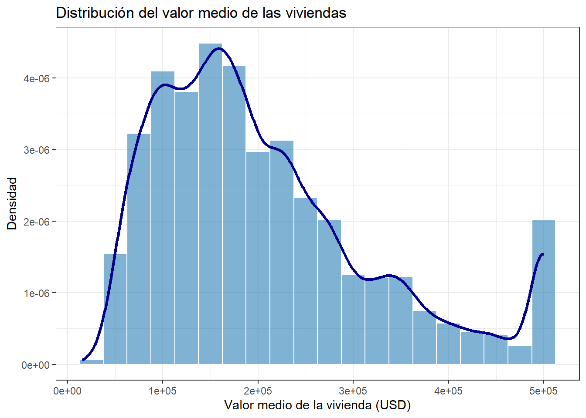
- Veamos un diagrama de cajas y bigotes
Code
df %>%
ggplot(aes(x = "", y = median_house_value)) +
geom_boxplot(fill = "#a6cee3", color = "#1f78b4", outlier.color = "red") +
stat_summary(
fun = mean,
geom = "point",
shape = 20,
size = 3,
color = "black"
) +
labs(
title = "Diagrama de cajas y bigotes del valor medio de las viviendas",
x = "",
y = "Valor medio de la vivienda (USD)"
) +
theme_bw()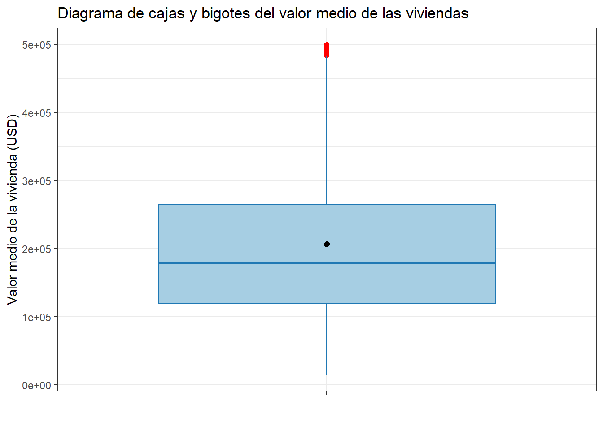
La distribución de median_house_value presenta una asimetría positiva, con una mayor concentración de viviendas en rangos de precios bajos y medios, mientras que una menor proporción de observaciones corresponde a viviendas de alto valor. El histograma y el diagrama de cajas evidencian la presencia de valores atípicos en el extremo superior de la distribución, así como una acumulación de observaciones alrededor de los 500.000 USD, lo que sugiere la existencia de un límite superior impuesto en el conjunto de datos. Esta característica provoca que la media sea superior a la mediana y puede influir en el ajuste de algunos modelos de aprendizaje automático, por lo que será importante considerarla durante las etapas posteriores del análisis y modelamiento.
3.4.4 Análisis de las variables características (independientes)
Analizaremos el iniciamente las variables numéricas
Code
resumen_numericas <- df %>%
select(where(is.numeric), -median_house_value) %>%
pivot_longer(
cols = everything(),
names_to = "variable",
values_to = "valor"
) %>%
group_by(variable) %>%
summarise(
n = sum(!is.na(valor)),
media = mean(valor, na.rm = TRUE),
ds = sd(valor, na.rm = TRUE),
mediana = median(valor, na.rm = TRUE),
minimo = min(valor, na.rm = TRUE),
maximo = max(valor, na.rm = TRUE),
Q1 = quantile(valor, 0.25, na.rm = TRUE),
Q3 = quantile(valor, 0.75, na.rm = TRUE),
IQR = IQR(valor, na.rm = TRUE),
.groups = "drop"
)
resumen_numericas## # A tibble: 8 × 10
## variable n media ds mediana minimo maximo Q1 Q3 IQR
## <chr> <int> <dbl> <dbl> <dbl> <dbl> <dbl> <dbl> <dbl> <dbl>
## 1 househol… 20640 500. 3.82e2 409 1 6082 280 605 3.25e2
## 2 housing_… 20640 28.6 1.26e1 29 1 52 18 37 1.9 e1
## 3 latitude 20640 35.6 2.14e0 34.3 32.5 42.0 33.9 37.7 3.78e0
## 4 longitude 20640 -120. 2.00e0 -118. -124. -114. -122. -118. 3.79e0
## 5 median_i… 20640 3.87 1.90e0 3.53 0.500 15.0 2.56 4.74 2.18e0
## 6 populati… 20640 1425. 1.13e3 1166 3 35682 787 1725 9.38e2
## 7 total_be… 20640 538. 4.19e2 438 1 6445 297 643. 3.46e2
## 8 total_ro… 20640 2636. 2.18e3 2127 2 39320 1448. 3148 1.70e3Code
library(patchwork)
# Boxplot de housing_median_age
p1 <- df %>%
ggplot(aes(x = "", y = housing_median_age)) +
geom_boxplot(fill = "#1f77b4", alpha = 0.7) +
labs(
title = "Antigüedad media de las viviendas",
y = "Años",
x = ""
) +
theme_bw()
# Boxplot de total_rooms
p2 <- df %>%
ggplot(aes(x = "", y = total_rooms)) +
geom_boxplot(fill = "#2ca02c", alpha = 0.7) +
labs(
title = "Número total de habitaciones",
y = "Habitaciones",
x = ""
) +
theme_bw()
# Boxplot de total_bedrooms
p3 <- df %>%
ggplot(aes(x = "", y = total_bedrooms)) +
geom_boxplot(fill = "#d62728", alpha = 0.7) +
labs(
title = "Número total de dormitorios",
y = "Dormitorios",
x = ""
) +
theme_bw()
# Primera fila
p1 + p2 + p3 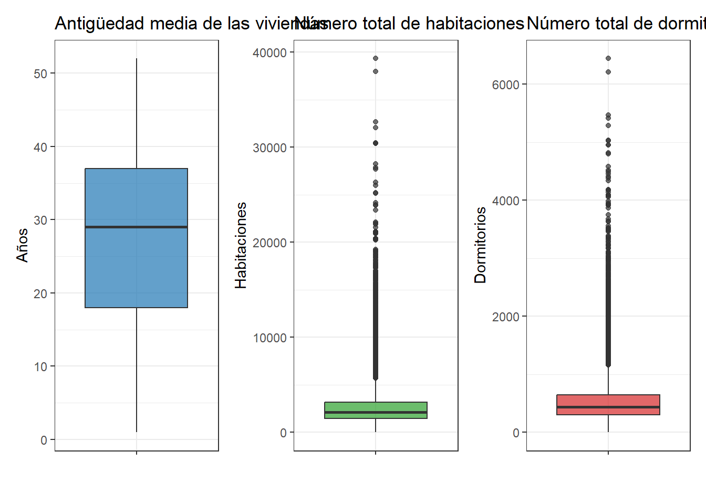
Code
# Boxplot de population
p4 <- df %>%
ggplot(aes(x = "", y = population)) +
geom_boxplot(fill = "#9467bd", alpha = 0.7) +
labs(
title = "Población",
y = "Habitantes",
x = ""
) +
theme_bw()
# Boxplot de households
p5 <- df %>%
ggplot(aes(x = "", y = households)) +
geom_boxplot(fill = "#ff7f0e", alpha = 0.7) +
labs(
title = "Número de hogares",
y = "Hogares",
x = ""
) +
theme_bw()
# Boxplot de median_income
p6 <- df %>%
ggplot(aes(x = "", y = median_income)) +
geom_boxplot(fill = "#8c564b", alpha = 0.7) +
labs(
title = "Ingreso medio",
y = "Ingreso (decenas de miles de USD)",
x = ""
) +
theme_bw()
# Segunda fila
p4 + p5 + p6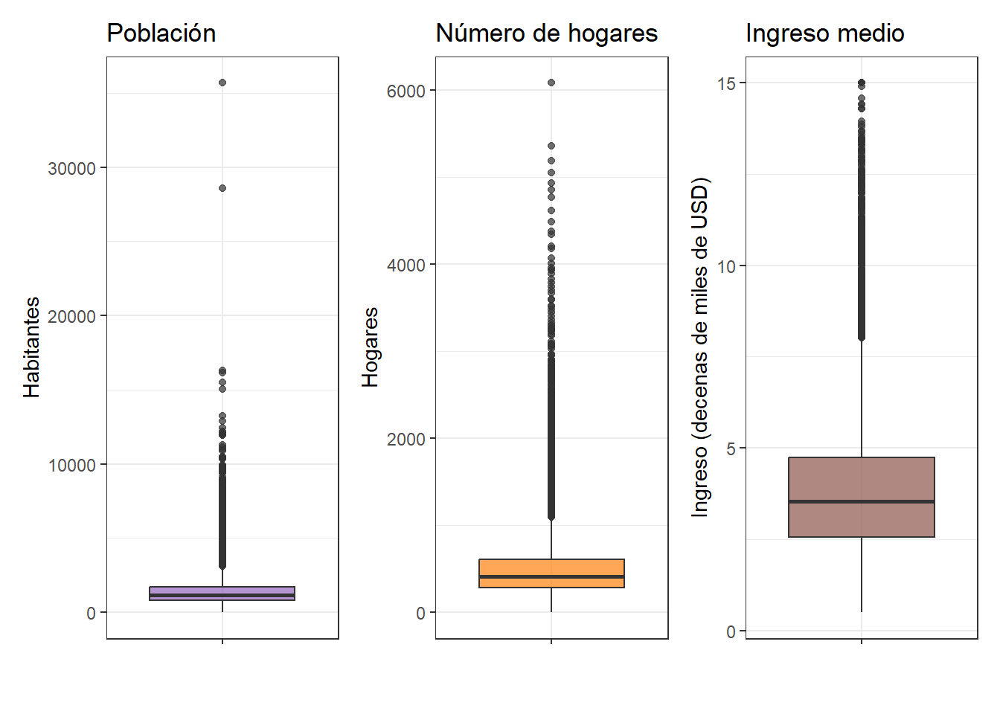
Ejercicio
Realizar las gráficas de las otras variables, además la interpretación de la tabla y el gráfico quedan como ejercicio
Ahora analizaremos las variables categóricas
Code
# Tabla de frecuencias para ocean_proximity
tabla_ocean <- df %>%
count(ocean_proximity, name = "Frecuencia") %>%
mutate(
Porcentaje = round(Frecuencia / sum(Frecuencia) * 100, 2),
Variable = "ocean_proximity",
Categoria = as.character(ocean_proximity)
) %>%
select(Variable, Categoria, Frecuencia, Porcentaje)
tabla_ocean## Variable Categoria Frecuencia Porcentaje
## 1 ocean_proximity <1H OCEAN 9136 44.26
## 2 ocean_proximity INLAND 6551 31.74
## 3 ocean_proximity ISLAND 5 0.02
## 4 ocean_proximity NEAR BAY 2290 11.09
## 5 ocean_proximity NEAR OCEAN 2658 12.88La variable ocean_proximity presenta una distribución desigual entre sus categorías. La categoría <1H OCEAN concentra el \(44.26\%\) de los registros, seguida de INLAND con el \(31.74\%\), por lo que en conjunto ambas representan el \(76.00\%\) de las observaciones. Las categorías NEAR OCEAN y NEAR BAY corresponden al \(12.88\%\) y \(11.09\%\), respectivamente, mientras que ISLAND representa únicamente el \(0.02\%\) de los datos, con tan solo 5 observaciones.
Esta distribución evidencia un desbalance entre las categorías, especialmente en el caso de ISLAND, cuya baja frecuencia puede dificultar la estimación confiable de modelos estadísticos. En consecuencia, durante el proceso de modelamiento será necesario considerar este desbalance, ya sea mediante técnicas de codificación adecuadas, agrupación de categorías poco representadas o evaluando el impacto de esta categoría en el desempeño de los modelos.
Code
tabla_ocean_b <- df %>%
count(ocean_proximity, name = "Frecuencia") %>%
mutate(
Porcentaje = round(Frecuencia / sum(Frecuencia) * 100, 1),
Etiqueta = paste0(Frecuencia, " (", Porcentaje, "%)")
)
ggplot(tabla_ocean_b, aes(x = reorder(ocean_proximity, -Frecuencia), y = Frecuencia)) +
geom_col(fill = "#008B8B", width = 0.6) +
geom_text(aes(label = Etiqueta), vjust = -0.5, size = 4.5) +
facet_wrap(~ "Distribución de la variable ocean_proximity") +
scale_y_continuous(expand = expansion(mult = c(0, 0.15))) +
labs(
x = "Proximidad al océano",
y = "Frecuencia (Porcentaje)"
) +
theme_bw(base_size = 12) +
theme(
plot.title = element_blank(),
strip.background = element_rect(fill = "gray80", color = NA),
strip.text = element_text(face = "bold"),
panel.grid.major.x = element_blank()
)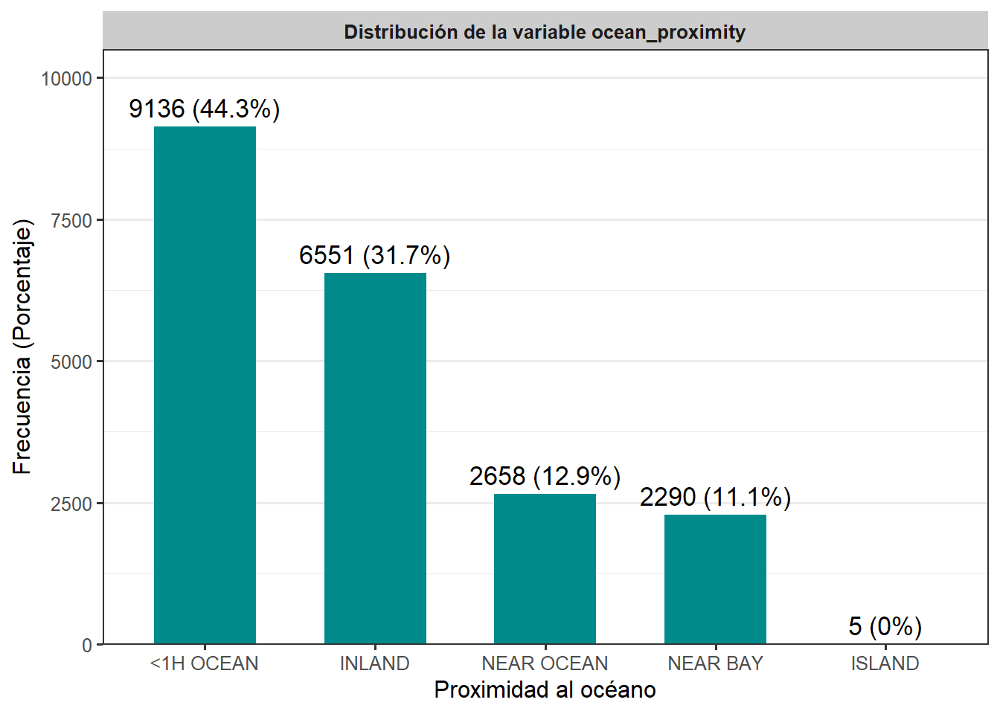
La categoría <1H OCEAN concentra la mayor proporción de observaciones, con \(9.136\) registros (\(44.3\%\)), seguida por INLAND, con \(6.551\) registros (\(31.7\%\)). En conjunto, estas dos categorías representan aproximadamente el \(76.0\%\) del conjunto de datos. Por otra parte, las categorías NEAR OCEAN y NEAR BAY corresponden al \(12.9\%\) y \(11.1\%\) de las observaciones, respectivamente, mientras que ISLAND está representada por únicamente 5 registros (\(0.02\%\)), lo que evidencia un marcado desbalance entre las categorías de la variable ocean_proximity.
3.4.5 Análisis exploratorio bivariado
- A continuación, analizaremos la relación entre la variable objetivo
median_house_valuey las variables numéricas independientes, con el fin de identificar posibles patrones, tendencias y asociaciones que puedan ser útiles para la construcción de modelos.
Code
# Diagrama de dispersión: median_house_value vs median_income
df %>%
ggplot(aes(x = median_income, y = median_house_value)) +
geom_point(alpha = 0.4, color = "#1E90FF") +
geom_smooth(method = "lm", formula = y ~ x, se = FALSE, color = "red") +
labs(
x = "Ingreso medio",
y = "Valor medio de la vivienda (USD)"
) +
theme_bw() +
facet_grid(. ~ "Dispersión entre el ingreso medio y el valor de las viviendas")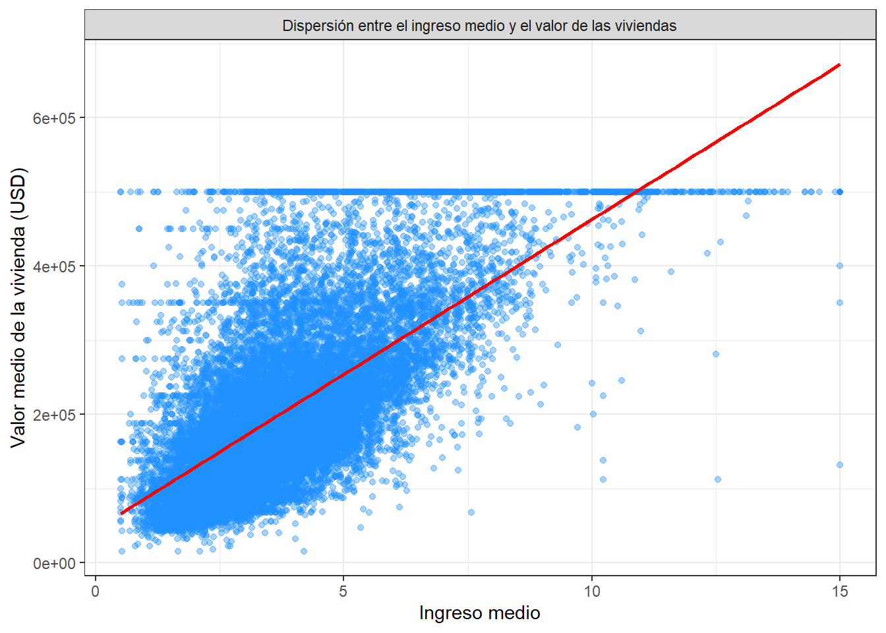
Los puntos presentan una tendencia ascendente claramente definida, indicando que, a medida que aumenta el ingreso medio (median_income) de una zona censal, también tiende a incrementarse el valor medio de las viviendas (median_house_value). La mayor concentración de observaciones se encuentra en ingresos medios entre 2 y 6 y valores de vivienda inferiores a \(400000\) USD, aunque existe una dispersión considerable para un mismo nivel de ingreso.
Se observa que la variabilidad del precio de las viviendas aumenta conforme crece el ingreso medio, lo que sugiere que en las zonas con mayores ingresos existen viviendas con un rango de precios más amplio. Asimismo, se aprecia una acumulación de observaciones alrededor de los \(500000\) USD, correspondiente al límite superior del conjunto de datos, lo que indica un posible efecto de censura en la variable objetivo.
En general, la relación entre median_income y median_house_value es positiva y aproximadamente lineal, siendo una de las asociaciones más fuertes del conjunto de datos. Esto sugiere que el ingreso medio constituye una variable con un alto poder explicativo para predecir el valor de las viviendas y, por tanto, será un predictor fundamental en la construcción de los modelos de regresión.
Ejercicio
Realiza los diagramas de dispersión de la variable median_house_value con respecto a las variables independientes que hacen falta. Analiza e interpreta la relación observada entre estas variables, indicando si existe una tendencia lineal, la presencia de valores atípicos y el grado de asociación con la variable objetivo.
- Realizaremos la comparación de la variable objetivo median_house_value con respecto a la variable categórica ocean_proximity, con el fin de evaluar si existen diferencias en el valor medio de las viviendas según la proximidad al océano.
Code
# Resumen de median_house_value por ocean_proximity
ocean_house <- df %>%
group_by(ocean_proximity) %>%
summarise(
n = length(median_house_value),
media = mean(median_house_value),
ds = sd(median_house_value),
mediana = median(median_house_value),
minimo = min(median_house_value),
maximo = max(median_house_value),
Q1 = quantile(median_house_value, 0.25),
Q3 = quantile(median_house_value, 0.75),
IQR = IQR(median_house_value),
.groups = "drop"
) %>%
mutate(
variable = "ocean_proximity",
niveles = as.character(ocean_proximity)
) %>%
select(variable, niveles, everything(), -ocean_proximity)
ocean_house## # A tibble: 5 × 11
## variable niveles n media ds mediana minimo maximo Q1 Q3
## <chr> <chr> <int> <dbl> <dbl> <dbl> <dbl> <dbl> <dbl> <dbl>
## 1 ocean_proximi… <1H OC… 9136 2.40e5 1.06e5 214850 17500 500001 164100 289100
## 2 ocean_proximi… INLAND 6551 1.25e5 7.00e4 108500 14999 500001 77500 148950
## 3 ocean_proximi… ISLAND 5 3.80e5 8.06e4 414700 287500 450000 300000 450000
## 4 ocean_proximi… NEAR B… 2290 2.59e5 1.23e5 233800 22500 500001 162500 345700
## 5 ocean_proximi… NEAR O… 2658 2.49e5 1.22e5 229450 22500 500001 150000 322750
## # ℹ 1 more variable: IQR <dbl>La variable ocean_proximity clasifica los sectores censales según su proximidad al océano y presenta cinco categorías. La categoría <1H OCEAN concentra el mayor número de observaciones (\(44.3%\), \(n = 9136\)), seguida de INLAND (\(31.7\%\), \(n = 6551\)), mientras que NEAR OCEAN (\(12.9\%\), \(n = 2658\)) y NEAR BAY (\(11.1%\), \(n = 2290\)) representan proporciones menores. La categoría ISLAND es prácticamente inexistente en el conjunto de datos, con únicamente 5 observaciones (\(0.02\%\)), por lo que cualquier conclusión sobre este grupo debe interpretarse con cautela.
Se observan diferencias importantes en el valor medio de las viviendas entre las distintas categorías. Los sectores ISLAND presentan el mayor valor promedio de las viviendas \(380440\) USD, (\(DS = 80559,56\) USD); sin embargo, debido a su reducido tamaño muestral, este resultado no es representativo de la población. Entre las categorías con un número considerable de observaciones, NEAR BAY registra el mayor valor medio con \(259212,30\) USD, (\(DS = 122818,54\) USD), seguida de NEAR OCEAN con \(249434,00\) USD, (\(DS = 122.477,15\) USD) y <1H OCEAN con \(240084,30\) USD, (\(DS = 106124,29\) USD). En contraste, la categoría INLAND presenta el menor valor promedio con \(124805,40\) USD, (\(DS = 70007,91\) USD), lo que sugiere que las viviendas ubicadas en zonas alejadas de la costa tienden a tener precios considerablemente inferiores.
La mediana del valor de las viviendas sigue el mismo comportamiento observado en la media, siendo más elevada en las categorías cercanas al océano y menor en las zonas del interior. Asimismo, las categorías NEAR BAY y NEAR OCEAN presentan los mayores rangos intercuartílicos (\(183200\) USD y \(172750\) USD, respectivamente), lo que evidencia una mayor heterogeneidad en los precios de las viviendas. Por otra parte, todas las categorías, excepto ISLAND, alcanzan el valor máximo de \(500001\) USD, lo que confirma la existencia del límite superior impuesto en la variable median_house_value. En conjunto, estos resultados indican que la proximidad al océano constituye un factor asociado con el valor de las viviendas y, por tanto, esta variable podría aportar información relevante en la construcción de modelos predictivos.
Ejercicio
Realiza el gráfico de dispersión de las variables independientes numéricas y su interpretación.
Paquete GGally
El paquete GGally es una extensión de ggplot2 que facilita la creación de gráficos multivariados para análisis exploratorio de datos. Una de sus funciones más utilizadas es ggpairs(), que permite visualizar simultáneamente relaciones entre varias variables, tanto numéricas como categóricas, mediante:
- Diagramas de dispersión (scatterplots),
- Histogramas o densidades en la diagonal,
- Correlaciones entre pares de variables numéricas.
Esto es especialmente útil para detectar patrones, asociaciones o valores atípicos en conjuntos de datos con múltiples variables.
Su instalación y carga del paquete
Modo de uso del paquete GGally:
## `stat_bin()` using `bins = 30`. Pick better value `binwidth`.
## `stat_bin()` using `bins = 30`. Pick better value `binwidth`.
## `stat_bin()` using `bins = 30`. Pick better value `binwidth`.
## `stat_bin()` using `bins = 30`. Pick better value `binwidth`.
## `stat_bin()` using `bins = 30`. Pick better value `binwidth`.
## `stat_bin()` using `bins = 30`. Pick better value `binwidth`.
## `stat_bin()` using `bins = 30`. Pick better value `binwidth`.
## `stat_bin()` using `bins = 30`. Pick better value `binwidth`.
## `stat_bin()` using `bins = 30`. Pick better value `binwidth`.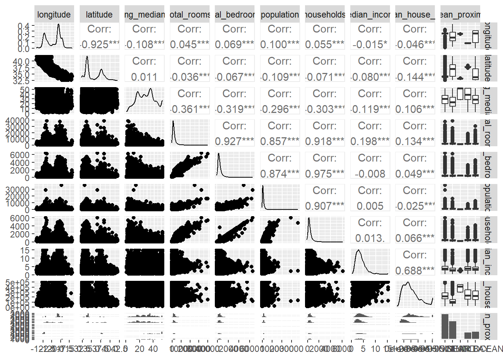
Ejercicio
Menciona los errores que puedes encontrar en el gráfico
3.5 Análisis explotario con variable respuesta categórica
3.5.1 Contexto del conjunto de datos de marketing de un banco
Este conjunto de datos corresponde a campañas de marketing directo realizadas por una institución bancaria portuguesa, cuyo objetivo era promover la contratación de depósitos a plazo fijo por parte de sus clientes. Las campañas se llevaron a cabo principalmente mediante llamadas telefónicas, y los datos recolectados reflejan tanto características socioeconómicas del cliente como información específica de la interacción comercial.
El conjunto contiene 4521 observaciones y 17 variables, entre las cuales se incluyen datos demográficos, financieros y relacionados con el historial de contacto de cada cliente. A continuación se describen las variables:
Estas son las variables
- age: Edad del cliente.
- job: Profesión del cliente (por ejemplo: desempleado, servicios, gestión).
- marital: Estado civil del cliente (soltero, casado, divorciado).
- education: Nivel educativo (primaria, secundaria, terciaria).
- default: Indica si el cliente tiene crédito en incumplimiento (sí/no).
- balance: Saldo promedio anual de la cuenta bancaria.
- housing: Indica si posee préstamo hipotecario (sí/no).
- loan: Indica si tiene préstamo personal (sí/no).
- contact: Tipo de comunicación utilizada (celular o fijo).
- day: Día del mes en que se realizó el último contacto.
- month: Mes del último contacto.
- duration: Duración de la última llamada (en segundos).
- campaign: Número de contactos realizados durante la campaña actual.
- pdays: Número de días transcurridos desde el último contacto previo (valor -1 indica que no hubo contacto anterior).
- previous: Número de contactos previos al actual.
- poutcome: Resultado de una campaña anterior (éxito, fracaso, desconocido).
- y: Variable objetivo que indica si el cliente aceptó (yes) o no aceptó (no) contratar un depósito a plazo fijo.
El objetivo principal es predecir si un cliente aceptará o no un depósito a plazo fijo (y), a partir de sus características personales, financieras y del historial de contactos anteriores. Este análisis permitirá a la entidad financiera optimizar sus estrategias de marketing, enfocándose en los perfiles con mayor probabilidad de conversión, reduciendo costos y mejorando la eficiencia de las campañas.
Inicialmente, haremos un análisis exploratorio de los datos.
3.5.2 Extracción, transformación y carga (ETL)
- Carguemos el conjunto de datos:
Code
- Verifiquemos que leímos bien los datos viendo el encabezado y la cola de los datos:
## age job marital education default balance housing loan contact day
## 1 30 unemployed married primary no 1787 no no cellular 19
## 2 33 services married secondary no 4789 yes yes cellular 11
## 3 35 management single tertiary no 1350 yes no cellular 16
## 4 30 management married tertiary no 1476 yes yes unknown 3
## 5 59 blue-collar married secondary no 0 yes no unknown 5
## month duration campaign pdays previous poutcome y
## 1 oct 79 1 -1 0 unknown no
## 2 may 220 1 339 4 failure no
## 3 apr 185 1 330 1 failure no
## 4 jun 199 4 -1 0 unknown no
## 5 may 226 1 -1 0 unknown noLas dimensiones, los nombres de las columnas y la estructura de la base de datos se obtienen con los códigos:
## [1] 4521 17## [1] "age" "job" "marital" "education" "default" "balance"
## [7] "housing" "loan" "contact" "day" "month" "duration"
## [13] "campaign" "pdays" "previous" "poutcome" "y"## 'data.frame': 4521 obs. of 17 variables:
## $ age : int 30 33 35 30 59 35 36 39 41 43 ...
## $ job : Factor w/ 12 levels "admin.","blue-collar",..: 11 8 5 5 2 5 7 10 3 8 ...
## $ marital : Factor w/ 3 levels "divorced","married",..: 2 2 3 2 2 3 2 2 2 2 ...
## $ education: Factor w/ 4 levels "primary","secondary",..: 1 2 3 3 2 3 3 2 3 1 ...
## $ default : Factor w/ 2 levels "no","yes": 1 1 1 1 1 1 1 1 1 1 ...
## $ balance : int 1787 4789 1350 1476 0 747 307 147 221 -88 ...
## $ housing : Factor w/ 2 levels "no","yes": 1 2 2 2 2 1 2 2 2 2 ...
## $ loan : Factor w/ 2 levels "no","yes": 1 2 1 2 1 1 1 1 1 2 ...
## $ contact : Factor w/ 3 levels "cellular","telephone",..: 1 1 1 3 3 1 1 1 3 1 ...
## $ day : int 19 11 16 3 5 23 14 6 14 17 ...
## $ month : Factor w/ 12 levels "apr","aug","dec",..: 11 9 1 7 9 4 9 9 9 1 ...
## $ duration : int 79 220 185 199 226 141 341 151 57 313 ...
## $ campaign : int 1 1 1 4 1 2 1 2 2 1 ...
## $ pdays : int -1 339 330 -1 -1 176 330 -1 -1 147 ...
## $ previous : int 0 4 1 0 0 3 2 0 0 2 ...
## $ poutcome : Factor w/ 4 levels "failure","other",..: 4 1 1 4 4 1 2 4 4 1 ...
## $ y : Factor w/ 2 levels "no","yes": 1 1 1 1 1 1 1 1 1 1 ...- Para facilitar el análisis exploratorio y evitar redundancias o ruido en el modelo, se eliminarán las variables
day,monthyprevious.
## age job marital education default balance housing loan contact
## 1 30 unemployed married primary no 1787 no no cellular
## 2 33 services married secondary no 4789 yes yes cellular
## 3 35 management single tertiary no 1350 yes no cellular
## 4 30 management married tertiary no 1476 yes yes unknown
## 5 59 blue-collar married secondary no 0 yes no unknown
## duration campaign pdays poutcome y
## 1 79 1 -1 unknown no
## 2 220 1 339 failure no
## 3 185 1 330 failure no
## 4 199 4 -1 unknown no
## 5 226 1 -1 unknown no- Identifiquemos los valores
NApor columna:
## NA_age NA_job NA_marital NA_education NA_default NA_balance NA_housing
## 1 0 0 0 0 0 0 0
## NA_loan NA_contact NA_duration NA_campaign NA_pdays NA_poutcome NA_y
## 1 0 0 0 0 0 0 0- Otra forma de hacerlo es:
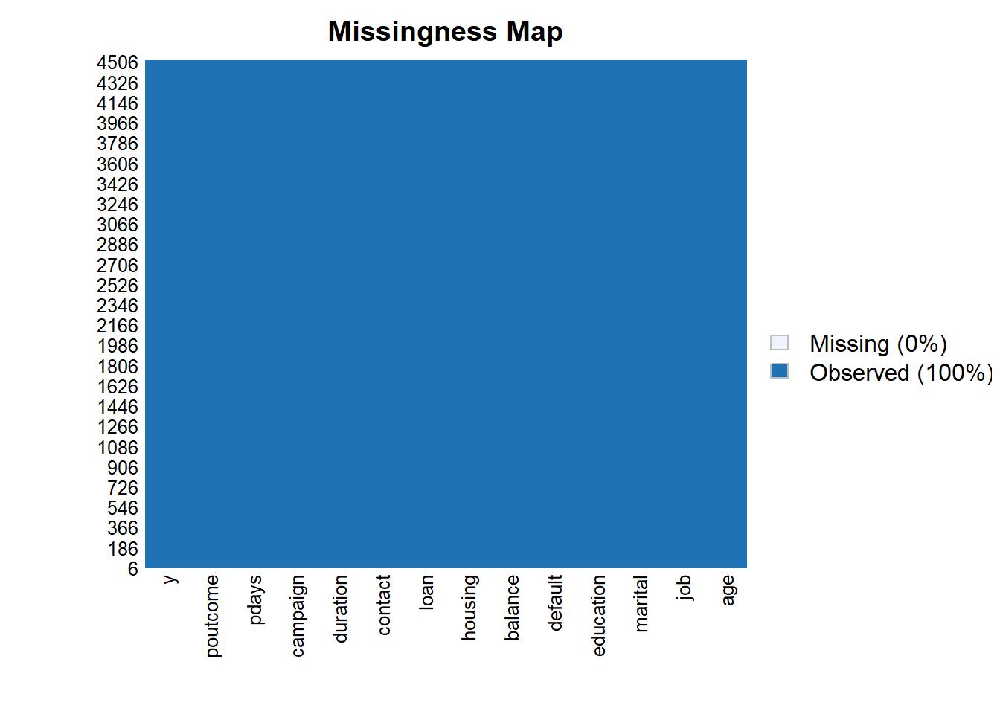
3.5.3 Análisis de la variable y (Target)
- Consideremos el resumen de la
y:
## y n porcentaje
## 1 no 4000 88.476
## 2 yes 521 11.524La variable y representa el resultado de la campaña de marketing, indicando si el cliente aceptó (yes) o no aceptó (no) contratar un depósito a plazo fijo. De un total de \(4521\) observaciones, el \(88.48\%\) de los clientes (\(n = 4000\)) no aceptaron la oferta, mientras que solo el \(11.52\%\) (\(n = 521\)) sí lo hicieron. Esta distribución refleja un fuerte desequilibrio en los clientes, lo que sugiere que la mayoría de los clientes no están interesados en este producto financiero, y dicho desequilibrio debe considerarse cuidadosamente al construir modelos de predicción.
- Veamos un diagrama de barras
Code
# Crear tabla de frecuencias para department
tabla_y <- df %>%
count(y, name = "Clientes") %>%
mutate(Porcentaje = round(Clientes / sum(Clientes) * 100, 1),
Etiqueta = paste0(Clientes, " (", Porcentaje, "%)"))
# Gráfico
tabla_y %>%
ggplot(aes(x = factor(y), y = Clientes)) +
geom_col(fill = "#008B8B", width = 0.6) +
geom_text(aes(label = Etiqueta), vjust = -0.5, size = 3) +
facet_grid(~ "Distribución de la campaña de marketing (no/yes)") +
scale_y_continuous(expand = expansion(mult = c(0, 0.15))) +
labs(x = "Campaña de marketing", y = "número de clientes (Porcentaje)") +
#coord_flip() +
theme_bw(base_size = 14) +
theme(
plot.title = element_blank(),
strip.background = element_rect(fill = "gray80", color = NA),
strip.text = element_text(face = "bold"),
panel.grid.major.y = element_blank(),
axis.text.y = element_text(size = 8)
)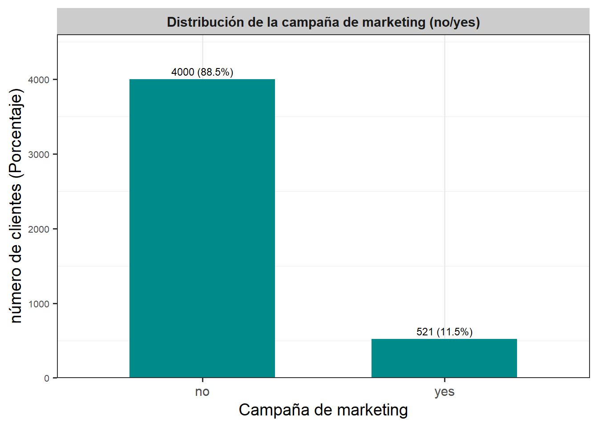
El gráfico de barras muestra claramente la distribución de respuestas en la campaña de marketing, evidenciando que la gran mayoría de los clientes no aceptaron la oferta del depósito a plazo fijo. Específicamente, el \(88.5\%\) de los clientes (\(4000\) personas) rechazaron la campaña (no), mientras que solo el \(11.5'%\) (\(521\) personas) decidieron aceptarla (yes). Esta marcada diferencia indica un fuerte desbalance en las clases de la variable objetivo, lo cual es relevante al momento de construir modelos predictivos, ya que se requiere considerar técnicas que manejen adecuadamente este desequilibrio para no sesgar el modelo hacia la clase mayoritaria.
3.5.4 Análisis de las variables características (independientes)
Analizaremos el iniciamente las variables numéricas
Code
df %>%
summarise(
n = length(age),
media = mean(age),
ds = sd(age),
mediana = median(age),
minimo = min(age),
maximo = max(age),
Q1 = quantile(age, 0.25),
Q3 = quantile(age, 0.75),
IQR = IQR(age)) %>%
mutate(variable = "age") -> var_num_age
df %>%
summarise(
n = length(balance),
media = mean(balance),
ds = sd(balance),
mediana = median(balance),
minimo = min(balance),
maximo = max(balance),
Q1 = quantile(balance, 0.25),
Q3 = quantile(balance, 0.75),
IQR = IQR(balance)) %>%
mutate(variable = "balance") -> var_num_bal
df %>%
summarise(
n = length(duration),
media = mean(duration),
ds = sd(duration),
mediana = median(duration),
minimo = min(duration),
maximo = max(duration),
Q1 = quantile(duration, 0.25),
Q3 = quantile(duration, 0.75),
IQR = IQR(duration)) %>%
mutate(variable = "duration")-> var_num_dur
df %>%
summarise(
n = length(campaign),
media = mean(campaign),
ds = sd(campaign),
mediana = median(campaign),
minimo = min(campaign),
maximo = max(campaign),
Q1 = quantile(campaign, 0.25),
Q3 = quantile(campaign, 0.75),
IQR = IQR(campaign)) %>%
mutate(variable = "campaign")-> var_num_camp
df %>%
summarise(
n = length(pdays),
media = mean(pdays),
ds = sd(pdays),
mediana = median(pdays),
minimo = min(pdays),
maximo = max(pdays),
Q1 = quantile(pdays, 0.25),
Q3 = quantile(pdays, 0.75),
IQR = IQR(pdays)) %>%
mutate(variable = "pdays")-> var_num_pdays
bind_rows(var_num_age, var_num_bal, var_num_dur,var_num_camp,var_num_pdays) %>%
select(variable, everything())## variable n media ds mediana minimo maximo Q1 Q3 IQR
## 1 age 4521 41.17010 10.576211 39 19 87 33 49 16
## 2 balance 4521 1422.65782 3009.638142 444 -3313 71188 69 1480 1411
## 3 duration 4521 263.96129 259.856633 185 4 3025 104 329 225
## 4 campaign 4521 2.79363 3.109807 2 1 50 1 3 2
## 5 pdays 4521 39.76664 100.121124 -1 -1 871 -1 -1 0El análisis estadístico de las variables numéricas revela características clave de los clientes contactados durante la campaña de marketing. La edad promedio es de \(41.17\) años (DS = \(10.58\) años), con un rango de \(19\) a \(87\) años, lo que indica una población adulta diversa. El saldo promedio anual en la cuenta bancaria (balance) es de \(1422.66\) USD (DS = \(3009.64\) USD), evidenciando una alta dispersión y la presencia de valores extremos, desde \(-3313\) hasta \(71188\) USD. La duración de las llamadas telefónicas presenta un promedio de \(263.96\) segundos (DS = \(259.86\) segundos), con el \(50\%\) de las observaciones por debajo de \(185\) segundos y un rango que va desde \(4\) hasta \(3025\) segundos, lo que sugiere una distribución muy dispersa y posiblemente sesgada. En cuanto al número de contactos durante la campaña (campaign), se observa un promedio de \(2.79\) contactos (DS = \(3.11\)), con el \(50\%\) de los registros por debajo de \(2\) y valores extremos que alcanzan hasta \(50\), aunque la mayoría de los clientes fue contactado pocas veces (rango intercuartílico de \(P75% = 3\) y \(P25% = 1\)). Por último, la variable pdays, que indica los días transcurridos desde el último contacto en campañas anteriores, tiene una media de \(39.77\) días (DS = \(100.12\) días), pero con el \(50\%\) de los registros y los percentiles \(25\%\) y \(75\%\) en \(-1\), lo que indica que la mayoría de los clientes no había sido contactada previamente, a pesar de que algunos registros superan los \(800\) días. Estos datos permiten identificar comportamientos heterogéneos y posibles segmentos dentro de la base de clientes.
##
## Adjuntando el paquete: 'gridExtra'## The following object is masked from 'package:dplyr':
##
## combineCode
# Boxplot de age
p1 <- df %>%
ggplot(aes(x = "", y = age)) +
geom_boxplot(fill = "#1f77b4", alpha = 0.7) +
stat_summary(fun = mean, geom = "point", shape = 18, size = 4, color = "black") +
labs(
title = "Distribución de la edad",
y = "Años",
x = ""
) +
theme_bw()
# Boxplot de balance
p2 <- df %>%
ggplot(aes(x = "", y = balance)) +
geom_boxplot(fill = "#2f43b1", alpha = 0.7) +
stat_summary(fun = mean, geom = "point", shape = 18, size = 4, color = "black") +
labs(
title = "Distribución del balance de la cuenta",
y = "Usd",
x = ""
) +
theme_bw()
# Diagrama de boxplot para duration
p3 <- df %>%
ggplot(aes(x = "", y = duration)) +
geom_boxplot(fill = "#2ca02c", alpha = 0.7) +
stat_summary(fun = mean, geom = "point", shape = 18, size = 4, color = "black") +
labs(
title = "Distribución de la duración de llamada (duration)",
y = "Segundos",
x = ""
) +
theme_bw()
# Diagrama de boxplot para campaign
p4 <-df %>%
ggplot(aes(x = "", y = campaign)) +
geom_boxplot(fill = "#ff7f0e", alpha = 0.7) +
stat_summary(fun = mean, geom = "point", shape = 18, size = 4, color = "black") +
labs(
title = "Distribución del número de contactos (campaign)",
y = "Número de contactos",
x = ""
) +
theme_bw()
# Diagrama de boxplot para pdays
p5 <-df %>%
ggplot(aes(x = "", y = pdays)) +
geom_boxplot(fill = "#9467bd", alpha = 0.7) +
stat_summary(fun = mean, geom = "point", shape = 18, size = 4, color = "black") +
labs(
title = "Días desde último contacto en campaña anterior (pdays)",
y = "Días",
x = ""
) +
theme_bw()
grid.arrange(p1, p2,p3,p4,p5, ncol = 2,newpage = FALSE)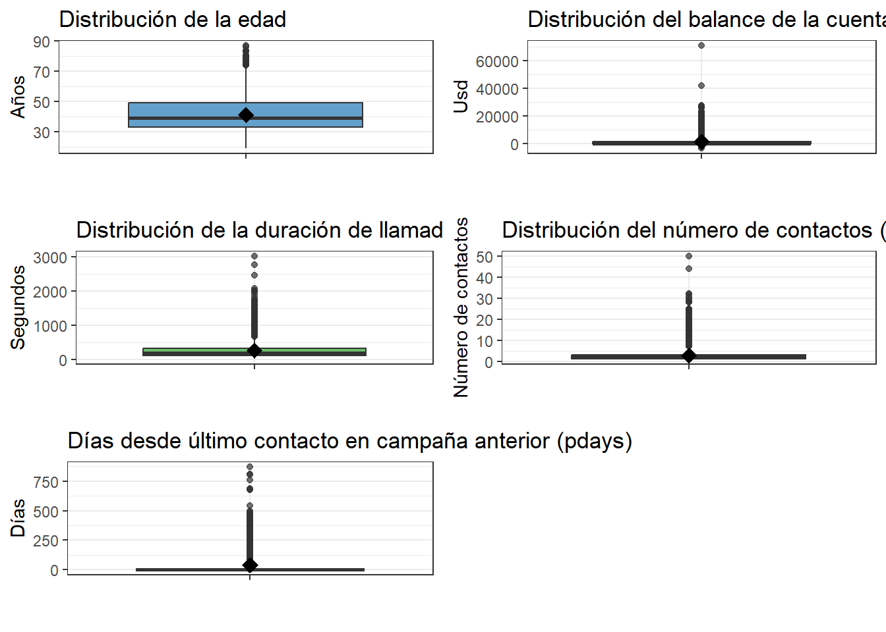
Ejercicio
La interpretación de los gráficos quedan como ejercicio
Ahora analizaremos las variables categóricas
Code
# Para job
tabla_job <- df %>%
count(job, name = "Frecuencia") %>%
mutate(Porcentaje = round(Frecuencia / sum(Frecuencia) * 100, 2),
Variable = "job",
Categoria = job) %>%
select(Variable, Categoria, Frecuencia, Porcentaje)
# Para marital
tabla_marital <- df %>%
count(marital, name = "Frecuencia") %>%
mutate(Porcentaje = round(Frecuencia / sum(Frecuencia) * 100, 2),
Variable = "marital",
Categoria = marital) %>%
select(Variable, Categoria, Frecuencia, Porcentaje)
# Para education
tabla_education <- df %>%
count(education, name = "Frecuencia") %>%
mutate(Porcentaje = round(Frecuencia / sum(Frecuencia) * 100, 2),
Variable = "education",
Categoria = education) %>%
select(Variable, Categoria, Frecuencia, Porcentaje)
# Para default
tabla_default <- df %>%
count(default, name = "Frecuencia") %>%
mutate(Porcentaje = round(Frecuencia / sum(Frecuencia) * 100, 2),
Variable = "default",
Categoria = default) %>%
select(Variable, Categoria, Frecuencia, Porcentaje)
# Para housing
tabla_housing <- df %>%
count(housing, name = "Frecuencia") %>%
mutate(Porcentaje = round(Frecuencia / sum(Frecuencia) * 100, 2),
Variable = "housing",
Categoria = housing) %>%
select(Variable, Categoria, Frecuencia, Porcentaje)
# Para loan
tabla_loan <- df %>%
count(loan, name = "Frecuencia") %>%
mutate(Porcentaje = round(Frecuencia / sum(Frecuencia) * 100, 2),
Variable = "loan",
Categoria = loan) %>%
select(Variable, Categoria, Frecuencia, Porcentaje)
# Para contact
tabla_contact <- df %>%
count(contact, name = "Frecuencia") %>%
mutate(Porcentaje = round(Frecuencia / sum(Frecuencia) * 100, 2),
Variable = "contact",
Categoria = contact) %>%
select(Variable, Categoria, Frecuencia, Porcentaje)
# Para poutcome
tabla_poutcome <- df %>%
count(poutcome, name = "Frecuencia") %>%
mutate(Porcentaje = round(Frecuencia / sum(Frecuencia) * 100, 2),
Variable = "poutcome",
Categoria = poutcome) %>%
select(Variable, Categoria, Frecuencia, Porcentaje)
# Unir todas las tablas
bind_rows(tabla_job, tabla_marital, tabla_education,tabla_default,
tabla_housing, tabla_loan,tabla_contact, tabla_poutcome)## Variable Categoria Frecuencia Porcentaje
## 1 job admin. 478 10.57
## 2 job blue-collar 946 20.92
## 3 job entrepreneur 168 3.72
## 4 job housemaid 112 2.48
## 5 job management 969 21.43
## 6 job retired 230 5.09
## 7 job self-employed 183 4.05
## 8 job services 417 9.22
## 9 job student 84 1.86
## 10 job technician 768 16.99
## 11 job unemployed 128 2.83
## 12 job unknown 38 0.84
## 13 marital divorced 528 11.68
## 14 marital married 2797 61.87
## 15 marital single 1196 26.45
## 16 education primary 678 15.00
## 17 education secondary 2306 51.01
## 18 education tertiary 1350 29.86
## 19 education unknown 187 4.14
## 20 default no 4445 98.32
## 21 default yes 76 1.68
## 22 housing no 1962 43.40
## 23 housing yes 2559 56.60
## 24 loan no 3830 84.72
## 25 loan yes 691 15.28
## 26 contact cellular 2896 64.06
## 27 contact telephone 301 6.66
## 28 contact unknown 1324 29.29
## 29 poutcome failure 490 10.84
## 30 poutcome other 197 4.36
## 31 poutcome success 129 2.85
## 32 poutcome unknown 3705 81.95En cuanto al estado civil (marital), la mayoría de los clientes están casados (\(61.87\%\)), seguidos por solteros (\(26.45\%\)) y divorciados (\(11.68\%\)), lo que sugiere una base de datos predominantemente compuesta por personas con vínculos conyugales estables. Respecto al nivel educativo (education), más de la mitad de los clientes tiene educación secundaria (\(51.01\%\)), mientras que el \(29.86\%\) alcanzó estudios terciarios y el \(15.00\%\) solo nivel primario. Un pequeño porcentaje (\(4.14\%\)) no reporta su nivel educativo. Estos datos permiten identificar patrones demográficos que podrían ser relevantes para el diseño de estrategias de marketing más efectivas según el perfil del cliente.
Ejercicio
Continua interpretando las demas variables.
Code
tabla_default_b <- df %>%
count(default, name = "Frecuencia") %>%
mutate(Porcentaje = round(Frecuencia / sum(Frecuencia) * 100, 1),
Etiqueta = paste0(Frecuencia, " (", Porcentaje, "%)"))
tabla_default_b %>%
ggplot(aes(x = default, y = Frecuencia)) +
geom_col(fill = "#008B8B", width = 0.6) +
geom_text(aes(label = Etiqueta), vjust = -0.5, size = 5) +
facet_wrap(~ "Distribución de la variable default") +
scale_y_continuous(expand = expansion(mult = c(0, 0.15))) +
labs(x = "¿Tiene crédito en incumplimiento?",
y = "Frecuencia (Porcentaje)") +
theme_bw(base_size = 14) +
theme(
plot.title = element_blank(),
strip.background = element_rect(fill = "gray80", color = NA),
strip.text = element_text(face = "bold"),
panel.grid.major.x = element_blank()
)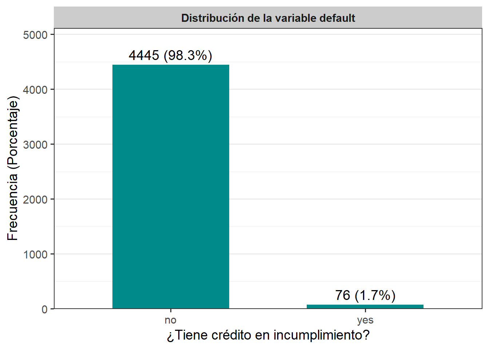
La gráfica muestra la distribución de la variable default, que indica si un cliente tiene o no un crédito en incumplimiento de pago. Se observa que el \(98.3\%\) de los clientes (\(4445\) personas) no tienen incumplimientos, mientras que solo el \(1.7\%\) (\(76\) personas) sí presentan incumplimientos. Esta marcada desproporción sugiere que la mayoría de los clientes se encuentran al día con sus compromisos financieros, y que el incumplimiento es un evento poco frecuente en la base de datos.
Ejercicio
Realiza los gráficos de las variables independientes categóricas faltantes e interprelas.
3.5.5 Análisis exploratorio bivariado
- Realizaremos la comparacion de la variable
ycon respecto a las variables numéricas independientes.
Code
# Diagrama boxplot: y vs age
df %>%
ggplot(aes(x = y, y = age)) +
geom_boxplot(fill = "#1E90FF", alpha = 0.6, color = "black") +
stat_summary(fun = mean, geom = "point", shape = 20, size = 3, color = "red") +
labs(
title = "Distribución de la edad según la respuesta del cliente",
x = "¿Aceptó el depósito a plazo fijo? (y)",
y = "Edad del cliente"
) +
theme_bw() +
theme(
plot.title = element_text(hjust = 0.5),
strip.background = element_rect(fill = "gray90", color = NA),
strip.text = element_text(face = "bold")
)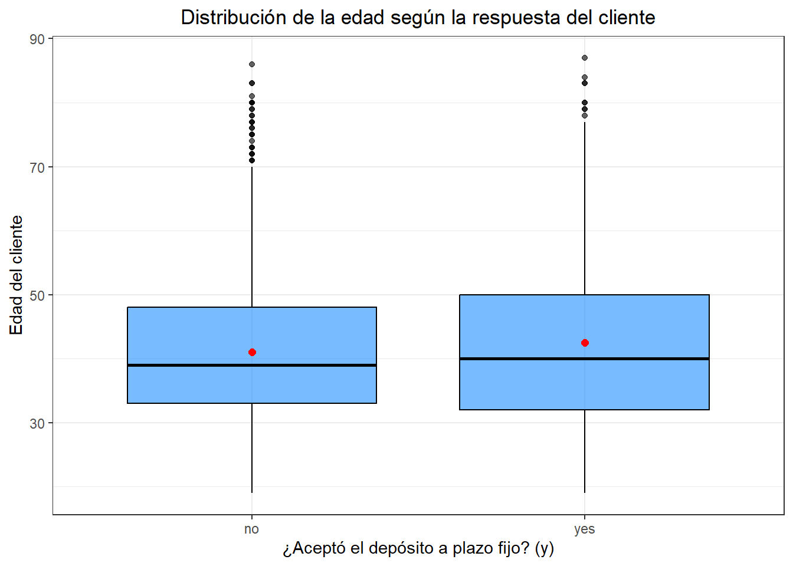
El grafico muestra la distribución de la edad de los clientes según su respuesta a la campaña de marketing, diferenciando entre quienes no aceptaron (no) y quienes sí aceptaron (yes) contratar un depósito a plazo fijo. Ambas gráficos muestran un comportamiento similar, donde el \(50\%\) de los clientes alrededor de los 40 años o menos en ambos casos. Tambien, se observa que los clientes que aceptaron la oferta tienden a tener un promedio ligeramente superior en comparación con quienes no aceptaron. Esto podría indicar que los clientes de mayor edad muestran una leve mayor disposición a aceptar el producto. En resumen, aunque hay una leve diferencia por edad, esta variable por sí sola no parece explicar completamente la decisión de aceptar el producto.
Ejercicio
Realiza el gráfico boxplot para las variables balance, duration, campaing, pdays segun la respuesta de campaña de marketing del banco (y) e interprétalos.
- Realizaremos la comparacion de las variables numéricas independientes con respecto a la variable
y
Code
# Agrupación por 'y'
age_y <- df %>%
group_by(y) %>%
summarise(n = length(age),
media = mean(age),
ds = sd(age),
mediana = median(age),
minimo = min(age),
maximo = max(age),
Q1 = quantile(age, 0.25),
Q3 = quantile(age, 0.75),
IQR = IQR(age)) %>%
mutate(variable = "age", niveles = as.character(y)) %>%
select(variable, niveles, everything(), -y)
balance_y <- df %>%
group_by(y) %>%
summarise(n = length(balance),
media = mean(balance),
ds = sd(balance),
mediana = median(balance),
minimo = min(balance),
maximo = max(balance),
Q1 = quantile(balance, 0.25),
Q3 = quantile(balance, 0.75),
IQR = IQR(balance)) %>%
mutate(variable = "balance", niveles = as.character(y)) %>%
select(variable, niveles, everything(), -y)
duration_y <- df %>%
group_by(y) %>%
summarise(n = length(duration),
media = mean(duration),
ds = sd(duration),
mediana = median(duration),
minimo = min(duration),
maximo = max(duration),
Q1 = quantile(duration, 0.25),
Q3 = quantile(duration, 0.75),
IQR = IQR(duration)) %>%
mutate(variable = "duration", niveles = as.character(y)) %>%
select(variable, niveles, everything(), -y)
campaign_y <- df %>%
group_by(y) %>%
summarise(n = length(campaign),
media = mean(campaign),
ds = sd(campaign),
mediana = median(campaign),
minimo = min(campaign),
maximo = max(campaign),
Q1 = quantile(campaign, 0.25),
Q3 = quantile(campaign, 0.75),
IQR = IQR(campaign)) %>%
mutate(variable = "campaign", niveles = as.character(y)) %>%
select(variable, niveles, everything(), -y)
pdays_y <- df %>%
group_by(y) %>%
summarise(n = length(pdays),
media = mean(pdays),
ds = sd(pdays),
mediana = median(pdays),
minimo = min(pdays),
maximo = max(pdays),
Q1 = quantile(pdays, 0.25),
Q3 = quantile(pdays, 0.75),
IQR = IQR(pdays)) %>%
mutate(variable = "pdays", niveles = as.character(y)) %>%
select(variable, niveles, everything(), -y)
# Unión de todas las tablas
bind_rows(age_y,balance_y,duration_y,campaign_y,pdays_y)## # A tibble: 10 × 11
## variable niveles n media ds mediana minimo maximo Q1 Q3 IQR
## <chr> <chr> <int> <dbl> <dbl> <dbl> <int> <int> <dbl> <dbl> <dbl>
## 1 age no 4000 41.0 1.02e1 39 19 86 33 48 15
## 2 age yes 521 42.5 1.31e1 40 19 87 32 50 18
## 3 balance no 4000 1403. 3.08e3 420. -3313 71188 61 1407 1346
## 4 balance yes 521 1572. 2.44e3 710 -1206 26965 171 2160 1989
## 5 duration no 4000 226. 2.10e2 167 4 3025 96 283 187
## 6 duration yes 521 553. 3.90e2 442 30 2769 260 755 495
## 7 campaign no 4000 2.86 3.21e0 2 1 50 1 3 2
## 8 campaign yes 521 2.27 2.09e0 2 1 24 1 3 2
## 9 pdays no 4000 36.0 9.63e1 -1 -1 871 -1 -1 0
## 10 pdays yes 521 68.6 1.22e2 -1 -1 804 -1 98 99Ejercicio
Realiza la interpretación para las variables independientes según y.
- Realizaremos la comparacion de las variables categóricas independientes con respecto a la variable
y
Code
## # A tibble: 6 × 5
## # Groups: y [2]
## y variable categoria n porcentaje
## <fct> <chr> <fct> <int> <dbl>
## 1 no marital divorced 451 11.3
## 2 no marital married 2520 63
## 3 no marital single 1029 25.7
## 4 yes marital divorced 77 14.8
## 5 yes marital married 277 53.2
## 6 yes marital single 167 32.1La distribución del estado civil según la respuesta del marketing muestra diferencias relevantes en los patrones de respuesta. Entre quienes respondieron afirmativamente (yes), el \(53.17\%\) están casados, el \(32.05\%\) solteros y el \(14.78\%\) divorciados. En contraste, en el grupo que respondió negativamente (no), la mayoría (\(63\%\)) también está casada, pero la proporción de solteros (\(25.73%\)) y divorciados (\(11.28\%\)) es menor. Esta diferencia sugiere que las personas solteras y divorciadas presentan una mayor disposición o probabilidad de responder afirmativamente frente a la acción evaluada por la variable y, mientras que los casados tienden más a rechazarla, lo que podría ser clave para estrategias de segmentación o análisis de comportamiento.
Ejercicio
Realiza las tablas de las variables independientes segun variable respuesta y. Interpreta las tablas.
Code
df_plot <- df %>%
group_by(y) %>%
count(default, name = "n") %>%
mutate(categoria = default,
variable = "default",
porcentaje = (n / sum(n)) * 100) %>%
select(y, categoria, n, porcentaje)
# Gráfica de barras agrupadas con etiquetas
df_plot %>%
ggplot(aes(x = categoria, y = n, fill = y)) +
geom_bar(stat = "identity", position = position_dodge(width = 0.9)) +
geom_text(aes(label = paste0(n, " (", round(porcentaje, 1), "%)")),
position = position_dodge(width = 0.9),
vjust = -0.3,
size = 3) +
labs(title = "Historial de impago (default)",
x = "Historial de impago (default)",
y = "Cantidad de clientes"
) +
theme_bw() +
scale_fill_brewer(palette = "Set1") 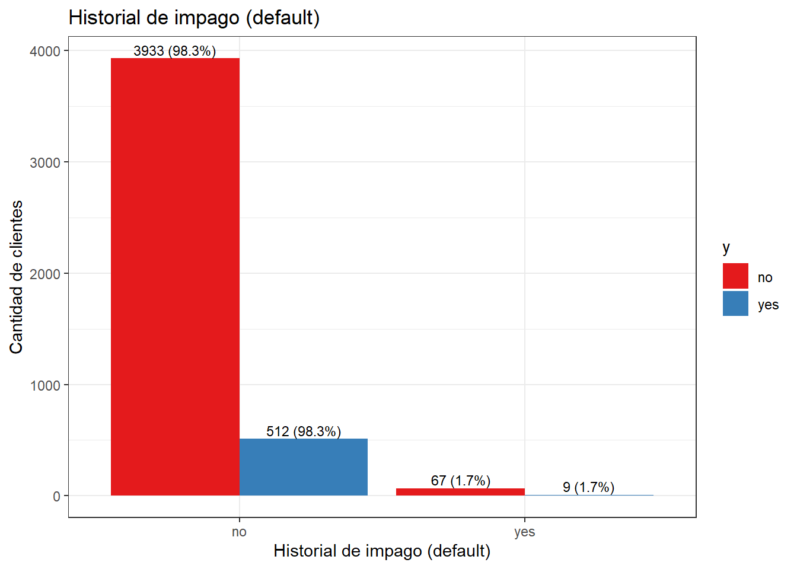
Ejercicio
- Interpreta la gráfica.
- Realiza las demas gráficas con sus respectivas interpretaciones